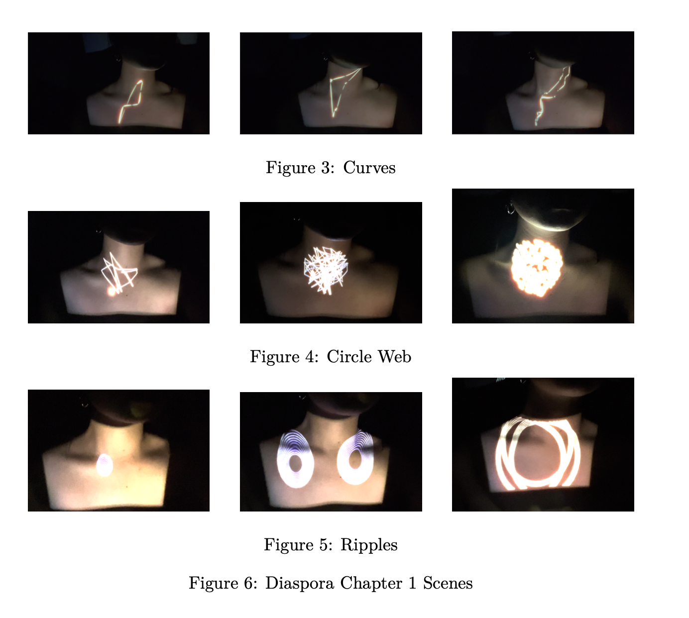

Diasopra Chap I: Body Politics
Diasopra Chap I: Body Politics Scenes
Diasopra Chap II: The Curse
Diasopra Chap II: The Curse Scenes

The project is about making generated visuals serving for the purpose of performance art and dancing. Themed diaspora, this project contains two parts: body politics and cultural identity. While in the first part, I projected the visuals onto my body, the second part included a performance dance using the generated visuals as a background. The purpose of this project is to show such feelings of struggling with cultural identity, a sense of belonging...that one might experience in diaspora.